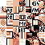

GlitchDex/GS:000
(↑ Back to the GlitchDex index.)
| ← Previous glitch Pokémon | Current glitch Pokémon | Next Pokémon → |
|---|---|---|
| ????? (FF) | ????? (00) | Bulbasaur |
| G: S: | |
|  | |
| Bulbapedia link | ????? (Gold/Silver 00) |
| Equivalent glitch Pokémon | ????? (Crystal 00) |
| Equivalent Pokémon (Generation I) | Rhyhorn |
| Index number (hex) | 00 |
| Index number (dec) | 00 |
| Pokédex number (Family) |
000 |
| Pokédex marker byte | 0x1F |
| Breeding result (when glitch Pokémon is female or paired with Ditto) | ????? (00) |
| Type(s) | Steel/éé 4. E é. 4& h 'l ₽ ( ' ₽]é 'dV A9₽ x (0xF1) |
| Category | |
| Base happiness | |
| Egg group | Water 2/Group 0 |
| Color | Brown |
| Catch rate constant | 0x0E |
| Experience group | 0x80 (identical to Medium-Fast) Level 50: 125000 experience Level 100: 1000000 experience |
| Experience yield | 255 |
| Height | |
| Weight | |
| Footprint | |
| Gender ratio | 100% male |
| Wild held item | Master Ball/HM12 |
| Sprite dimensions | 14x0 |
Please note that some of the data described here may not be fully reliable if it depends on the contents of writable memory, such as RAM; WRAM; SRAM.
Tested mainly on Gold Version only.
00 (????? 00) is a dual-type Steel/éé 4. E é. 4& h 'l $ ( ' $]é 'dV A9$ x (hex:F1) glitch Pokémon in Pokémon Gold and Silver, with an index number of hex:00 (dec:00).
In Gold it has an invalid menu-sprite, while in Silver it uses Slowpoke's menu-sprite.
It is part of an unnamed Egg group (0) not used by any valid Pokémon. It shares this trait with ????? (Gold/Silver FC).
Contents
Movepool
By level up
(No known moves)
By TM/HM
- TM02 Headbutt
- TM03 Curse
- TM06 Toxic
- TM08 Rock Smash
- TM17 Protect
- TM19 Giga Drain
- TM21 Frustration
- TM25 Thunder
- TM28 Dig
- TM31 Mud-Slap
- TM37 Sandstorm
- TM38 Fire Blast
- TM39 Swift
- TM40 Defense Curl
- TM45 Attract
- TM49 Fury Cutter
- TM50 Nightmare
- HM05 Flash
(Source: Yuzihax's G/S/C TM/HM list)
Base stats
| Base stats | Level 50 stat range | Level 100 stat range |
|---|---|---|
| HP: 224 | 284-330 | 558-651 |
| Attack: 1 | 6-52 | 7-100 |
| Defense: 188 | 193-239 | 381-474 |
| Speed: 67 | 72-118 | 139-232 |
| Special Attack: 163 | 168-214 | 331-424 |
| Special Defense: 213 | 218-264 | 431-524 |
Pokédex entry
's Pokédex entry may be filled with many 9s. Registering this glitch Pokémon in the Pokédex sets bit $07 of $DC03 and $DC23; the last 'own' and 'seen' Pokédex bytes respectively, however it does not appear as a selectable Pokémon in the list when the Pokédex is opened.
Evolutions
????? (FE) |
Level 12 → |
????? (00) |
has been observed to evolve into a Nidoran♂ at level 1, however the evolution does not always take place and may depend on internal memory.
Methods to obtain
- Stabilize a bad clone.
- Stabilize a hybrid from Hall of Fame SRAM glitch.
- International trades involving Japanese games.
- Arbitrary code execution (e.g. through Coin Case arbitrary code execution, wrong pocket TMs, glitch Pokédex categories).
Notes
When this is encountered in battle, it may cause corruption of the memory beginning from $D000.
This may change the battle style to a Link Battle. This disables the use of items and making a turn will result in a "Waiting...!" message which may never end. The Link Battle freeze can be avoided by setting the memory address D042 to 00 (or by using the GameShark code 010042D0).
If the GameShark code 0100EDD0 is enabled from within the battle, then it is possible to capture the and register its Pokédex entry if bit 7 of $DC03 is not set; but unexpected battle behavior may follow the nickname prompt; reportedly including an enemy Trainer switching Pokémon, or fleeing.
This glitch Pokémon can be used to hide other Pokémon below it on the deposit and move PkMn w/o Mail menus, making it applicable for ????? party overloading.
In Pokémon Silver it has the mini-sprite of a Slowpoke, unlike Pokémon Gold it has an animated 'glitch block' minisprite.
Additional sprites
The front sprites of this glitch Pokémon may be affected based on the location it is encountered, whether an item was used, and the previous enemy battle sprite.